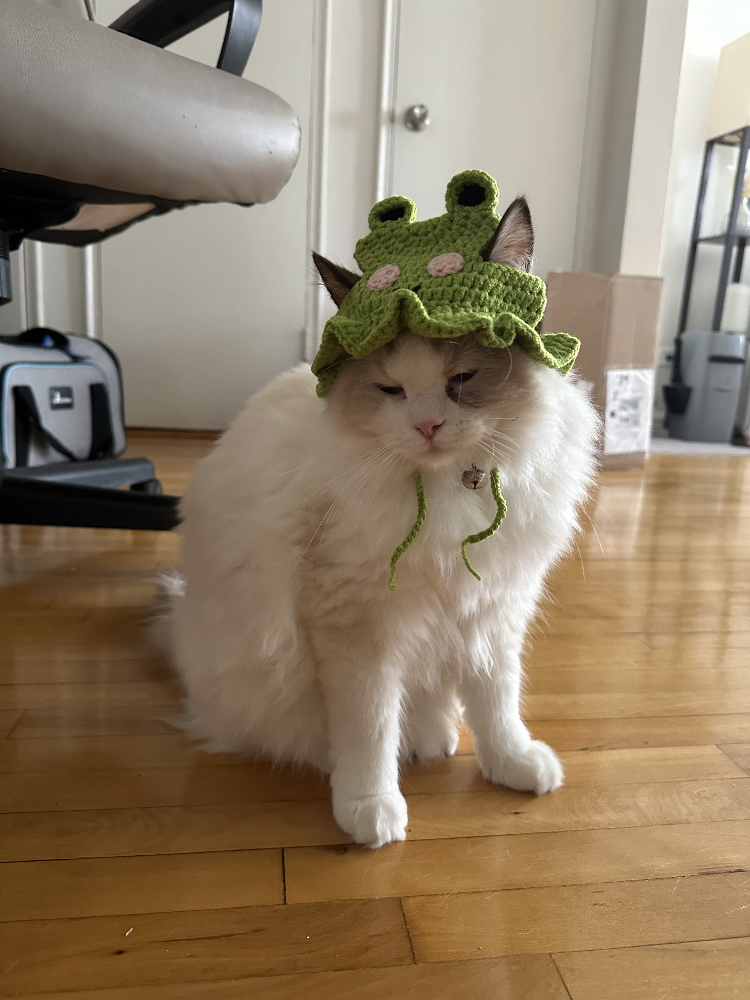
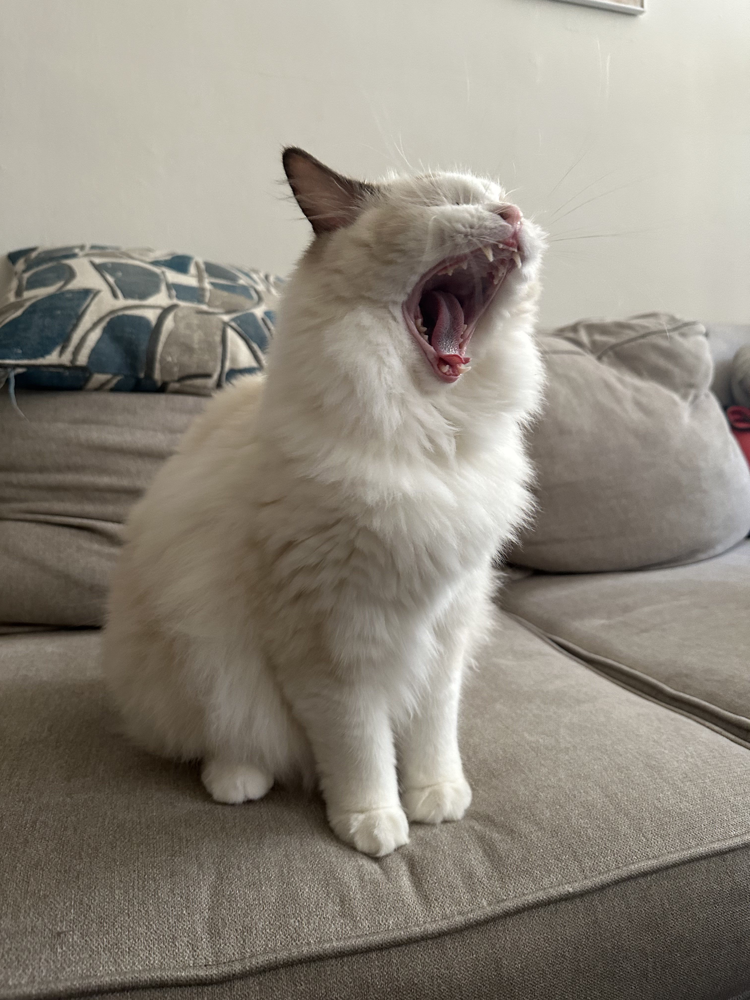

The cat (Felis catus) is a domestic species of small carnivorous mammal. It is the only domesticated species in the family Felidae and is commonly referred to as the domestic cat or house cat to distinguish it from the wild members of the family. Cats are commonly kept as house pets but can also be farm cats or feral cats; the feral cat ranges freely and avoids human contact. Domestic cats are valued by humans for companionship and their ability to kill vermin. About 60 cat breeds are recognized by various cat registries.
About Me/Aang


My name is Farhan Karim, I am a student from Scholars' Academy and I am 17 years old. I created this website from my favorite animal, which are cats. My further inspirtaion was my cat (pictures of the left), whose name is Aang. You know from the last airbender, not the legend of korea crap. But anyway, I wanted to inform people about cats and how they shouldnt be hated on for no reason.